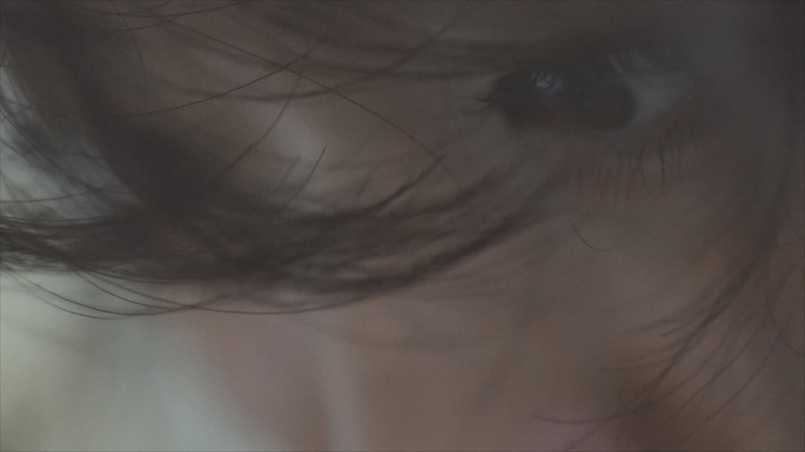
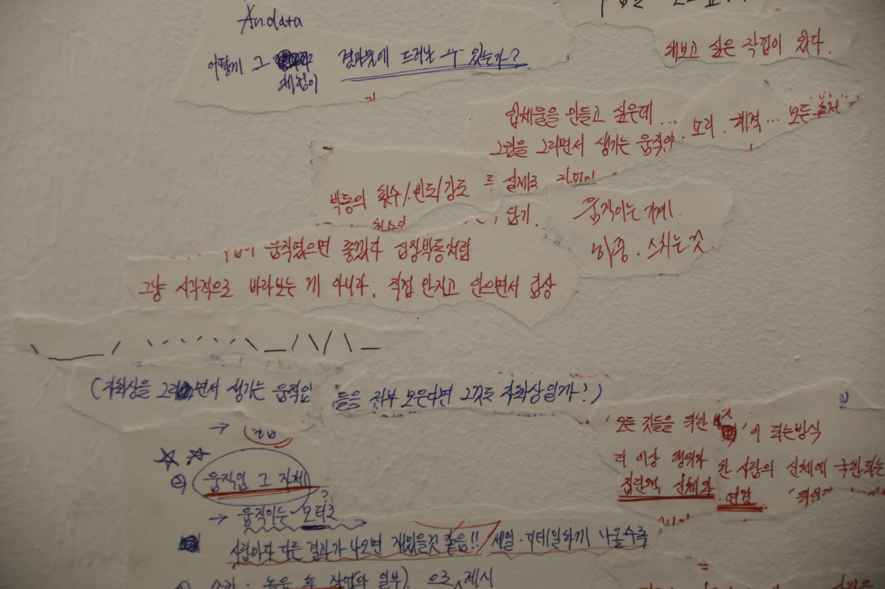
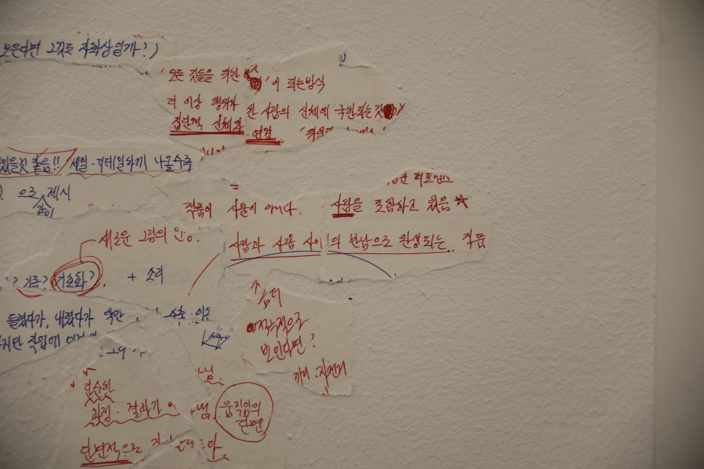
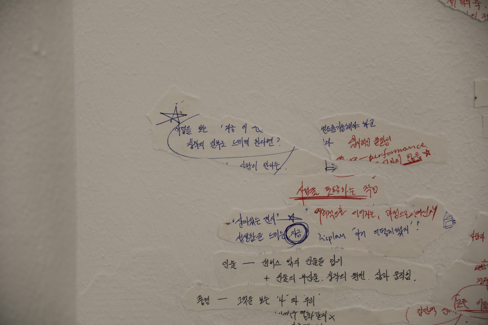
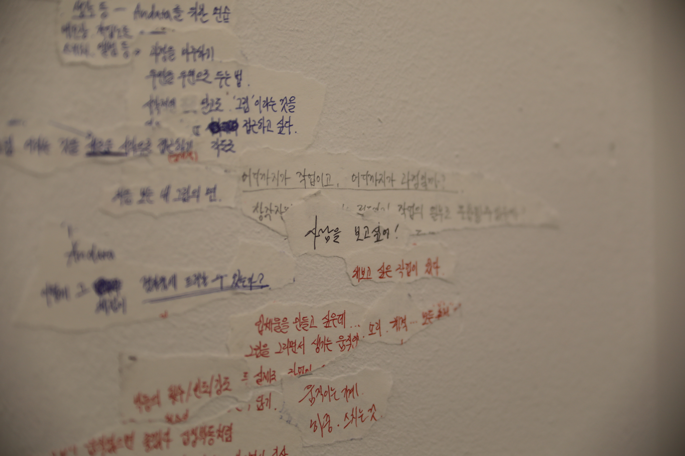

Andata
This project is informed by Sakamoto Ryuichi's Andata, an Italian word associated with 'departure'.
무언가 쿵쿵 두근대는 이미지가 머릿속에 찾아와 떠나지 않았던 것은 지난 6월의 일이었습니다.
Last June, a kind of pulsing image came to mind and never left.

몸의 궤적과 떨림, 시선, 습기 찬 호흡. 흔들거리는 책상과 의자. 무슨 자세를 취했는지, 얼굴은 또 어떤 표정을 지었는지. 옷깃이 스치는 소리, 붓을 내려놓는 소리. 눈동자의 깜박임과 들숨, 날숨, 장기의 박동, 혼자 쓴 글과 사진, 여러 목소리들......
The body's path and quiver, gaze, humid breath. Desk and chair shifting slightly. What posture it was, what kind of expression. Brushing sound, a tap of an object on the desk. Blinking eyes, breath in, out, pulse of organs, texts and photos made alone, surrounding voices......

마음에서 나오는 작업이란 뭘까요? 저는 그를 위해 살고 있다고 말하지만 막상 제 속에 있는 것 하나 스스로 꺼내는 일조차 쉽지 않습니다. 어떤 때는 강렬한 확신에 휩싸이다가 일순간 식어 버리기도 하고, 남들에게 보이기 전까지 수백 번의 고민을 하고 불안에 짓눌리다가 또 어느 순간에는 표현할 수 없을 정도로 높게 넘실하는 사랑을 느끼기도 했습니다.
What does it mean for work to come from within? I say I live for it, but even bringing out a single thing from within myself is not easy. I'm seized by an intense certainty; it cools almost at once. I hesitate again and again before showing my work to others, weighed down—but sometimes I'm filled with a surging love.
최근에는 그런 작품 너머 사람에 대한 사랑과 그리움에 대해서 많이 생각하고 있어요. 모든 작업의 이면에는 다름 아닌 사람이 있다는 사실을 부정할 수 없습니다. 지금 이 순간엔 없지만, 어떤 때 어떤 곳에는 분명 존재했을 그 사람. Andata는 오랫동안 제 안에 머물러 있었던 그들을 꺼내보기 위한 시도예요. 이것이 그림을 마주하는 솔직한 출발이 되기를 바라고 있습니다.
These days I've been thinking a lot about love and missing the people beyond the work. It's impossible to deny that behind every work, there is a person. Someone who is not here now, but who existed at a certain time, in a certain place. Andata is an attempt to bring out those who have stayed within me for a long time. I hope this can be an honest departure toward facing our painting.


Works


You can click each image to visit its page.